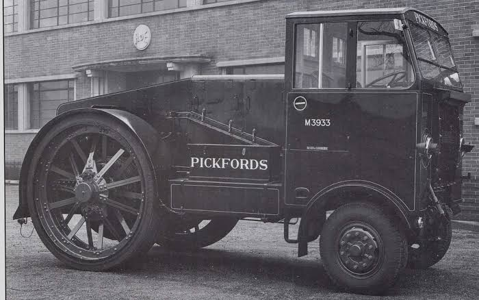
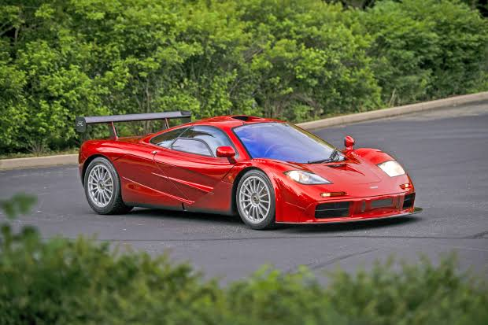
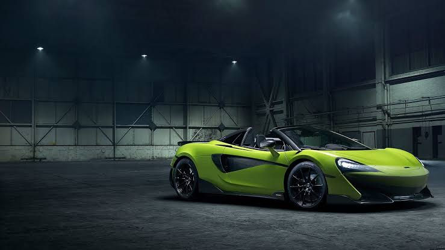

| Company name | McLaren Automotive |
|---|---|
| Founder | Bruce McLaren |
| Founded on | 2 September 1963 |
| Headquarters | Woking, United Kingdom |
| Parent organization | McLaren Group |
| Chairman | Paul Walsh |
| CEO | Zak Brown |
| No.of production plants | 2 |
| Customer service | 00 44 1483 261500 |
McLaren is a British car manufacturer that was founded by Bruce McLaren in 1963. The New Zealand born racer, car designer and inventor achieved McLaren’s first Grand Prix win in 1968 after the teams first F1 car, the M2B, debuted at the Monaco Grand Prix 3 years earlier in 1965.As the McLaren Racing Team began to see success in Formula One, it also saw success in other motorsport categories. In 1967, McLaren Racing won five out of six races in the Can-Am series. 1968 saw them win four of six and then the following year the team won all of the 11 races of the season.
After Honda withdrew from F1 in the mid-1990’s and Senna moved to Williams, McLaren went through a period of limited success. They went three years without a win.The racing team were back to form in the late 90’s though. With the help of former Williams designer Adrian Newey, a Mercedes-Benz engine package, a sponsorship from West and driver Mika Häkkinen, McLaren went on to win further championships in 1998 and 1999.
After Lewis Hamilton left McLaren Racing for Mercedes at the end of the 2012 season, the racing teams troubles continued. 2013 was their worst season since 2004 and they were relegated to the mid pack, behind the likes of Mercedes, Red Bull and Ferrari. From 2015, Honda saw a return to Formula One in the form of McLaren using their engines. The team raced as McLaren-Honda for the first time since 1992 at the 2015 Australian Grand Prix.Further production cars were unveiled in 2014 and 2015 after McLaren announced they would be planning to release a new car every year. The 650S Coupe and Spider models came in 2014, while the sports series 570S and 540C made their appearance in 2015.Additionally, in 2015 McLaren launched a track version of the P1, the P1 GTR. This was unveiled at the Geneva Motor Show and production was extremely limited and only original P1 owners were invited to buy one.
